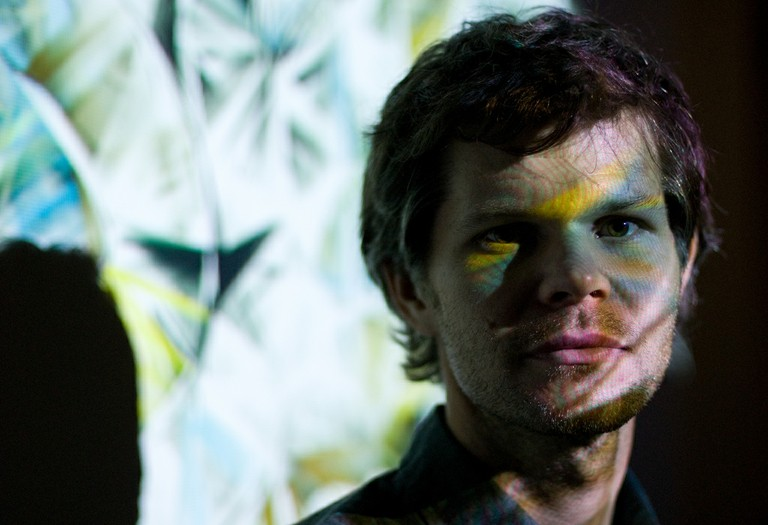
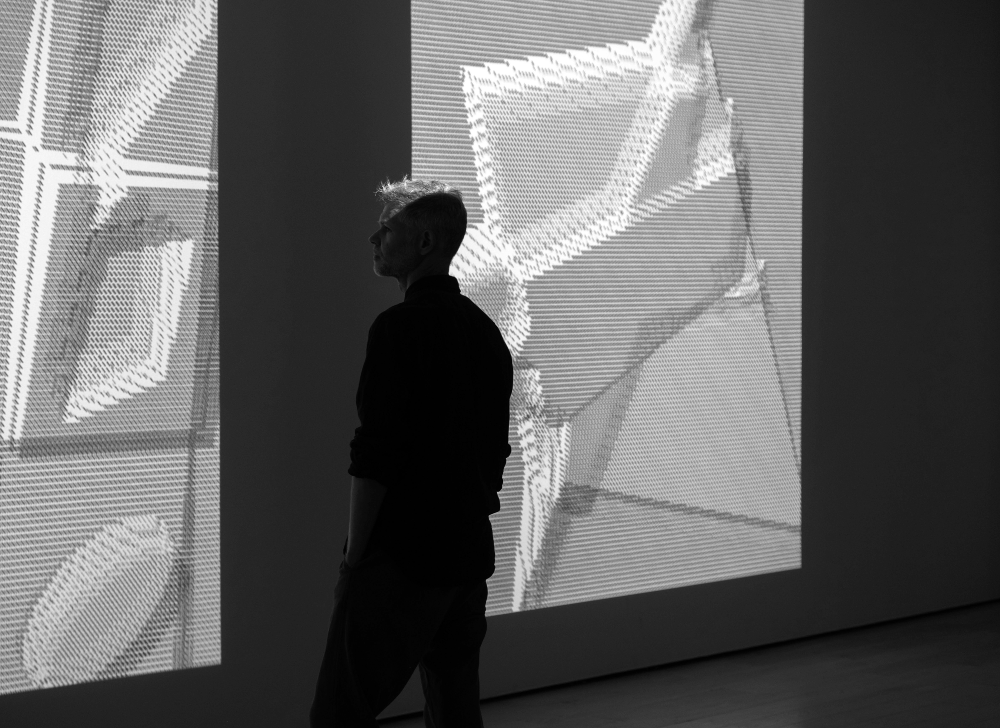

Trayectoria y contribuciones
Nacido en Estados Unidos, Casey Reas desarrolló su formación en diseño y medios digitales, consolidando una carrera que combina investigación, producción artística y docencia. Es ampliamente conocido por ser co-creador del lenguaje de programación Processing, junto a Ben Fry, una herramienta fundamental para artistas y diseñadores que trabajan con código.
A lo largo de su trayectoria, su obra ha sido exhibida en museos, galerías y festivales internacionales. Sus proyectos exploran tanto sistemas digitales como su materialización en formatos físicos, ampliando las posibilidades del arte generativo.
Su influencia se extiende también al ámbito educativo, donde ha contribuido a formar nuevas generaciones de artistas y desarrolladores. Su trabajo ha sido clave para establecer un puente entre el arte, el diseño y la programación.
El código como sistema visual
El enfoque de Casey Reas se basa en la creación de instrucciones que definen comportamientos visuales. En lugar de diseñar una imagen de forma directa, desarrolla algoritmos que determinan cómo los elementos se relacionan, se mueven y evolucionan en el tiempo. Este método convierte al código en el núcleo del proceso creativo.
A partir de reglas simples, sus sistemas pueden generar resultados complejos e impredecibles. Esta lógica permite explorar la emergencia, donde patrones y formas surgen de la interacción entre componentes. El resultado es una obra que no está completamente controlada, sino que se desarrolla dentro de un marco definido.


Sistemas, reglas y variación
El trabajo de Casey Reas se fundamenta en la idea de que una obra puede ser entendida como un sistema de reglas. Estas reglas definen las posibles interacciones entre los elementos visuales, permitiendo que la obra se genere a partir de su ejecución.
Este enfoque introduce la variación como un elemento central. Cada vez que el sistema se ejecuta, puede producir un resultado diferente, lo que transforma la noción de originalidad y repetición en el arte digital.
El rol del artista-programador
En la práctica de Reas, el artista asume el rol de programador. En lugar de intervenir directamente sobre la imagen final, diseña el conjunto de instrucciones que dará lugar a múltiples resultados posibles.
Este cambio de rol implica una forma distinta de pensar el proceso creativo. La autoría se desplaza hacia el diseño del sistema, mientras que la ejecución introduce elementos de autonomía y sorpresa en la obra.


Influencia en el arte contemporáneo
La obra de Casey Reas ha tenido un impacto significativo en el desarrollo del arte digital y generativo. Su enfoque ha contribuido a legitimar el uso del código como un medio artístico en el contexto contemporáneo.
Su influencia puede observarse en numerosos artistas y proyectos que adoptan el pensamiento basado en sistemas y algoritmos. A través de su trabajo, se ha ampliado la comprensión de las posibilidades del arte en relación con la tecnología.
Obras y conceptos clave
- Software Structures
- Process
- Generative Systems
- Emergencia
- Arte basado en reglas
- Visualización algorítmica